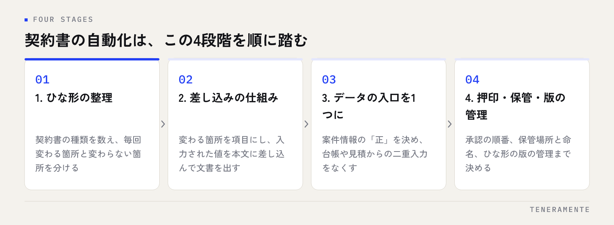

契約書を作るとき、前回のファイルを複製して社名と金額を書き換える。この進め方は慣れているぶん速く感じますが、時間を取る場所とミスが出る場所が同じところに集まります。自動化の出発点はツールを選ぶことではなく、いま社内にあるひな形を数えて、どこが毎回変わるのかを書き出すことです。
📌 この記事の結論
契約書の自動化はひな形の整理・差し込みの仕組み・データの入口・保管と版の管理という4段階に分かれます。最初にやるのは種類と差分の洗い出しで、ここを飛ばしてツールから決めると、ひな形の数だけ設定作業が増えて途中で止まります。
01契約書の作成で時間を取っているのは、文字を打つ工程ではない
契約書作成の負担を聞くと「入力が面倒」という答えが返ってきますが、作業を分解すると入力そのものは短い時間です。時間を取っているのは、その前後にある確認の工程です。
前の工程では、前回どのひな形を使ったかを探します。フォルダに似た名前のファイルが並んでいて、どれが最新版か分からない。開いて中を見比べ、正しいものを選ぶところで止まります。
後の工程では、書き換え漏れを探します。複製して作ると、前の相手先の名前や前回の金額が本文の途中に残ります。だから印刷して読み合わせをし、二人目の確認者を立てます。この読み合わせが、1件あたりでいちばん長い作業です。
つまり自動化で短くなるのは、入力時間ではなく探す時間と読み合わせの時間です。ここを基準にすると、どの仕組みを入れるべきかの判断が変わります。入力画面を作るだけでは、読み合わせはなくなりません。残った箇所を人が書き換える形が残っていれば、確認の工程はそのまま残ります。
02契約書の自動化は4つの段階に分かれる
自動化を一度に完成させようとすると、要件が膨らんで動き出せません。実際に進めやすいのは、次の4つの段階を順に踏む形です。

段階を飛ばさない理由
第2段階から着手すると、ひな形の種類が整っていないため、差し込みの設定をひな形の数だけ作り直すことになります。第1段階の洗い出しは、机の上で終わる作業です。
第1段階は、ひな形の整理です。社内にある契約書の種類を数え、毎回変わる箇所と、変わらない箇所を分けます。第2段階は、差し込みの仕組みづくりです。変わる箇所を項目にして、入力された値を本文に差し込んで文書を出します。
第3段階は、データの入口を1つにすることです。案件情報が別の台帳や見積書にもあるなら、そこから持ってきて二重入力をなくします。第4段階は、押印・保管・版の管理です。出来た文書をどこに置き、どの版が有効かを仕組みの中で決めます。
多くの会社では、第2段階まで進むと体感がはっきり変わります。第3段階以降は、件数が増えてから着手しても遅くありません。
03最初にやるのは、契約書の種類と差分の洗い出し
最初の作業は、紙とスプレッドシートでできます。社内で使っている契約書・覚書・発注書を1件ずつ挙げ、次の3つを記録します。
種類と年間の件数。業務委託契約、秘密保持契約、賃貸借契約、覚書など、名前ごとに分けて、1年に何件作っているかを書きます。件数の多いものから自動化すると効果が出ます。
毎回変わる箇所。相手先名、住所、代表者名、期間、金額、支払条件、業務の範囲。本文のどこに現れるかまで見ます。同じ値が本文の3か所に出てくるなら、それは書き換え漏れが起きる箇所です。
条件によって出し入れする条項。再委託の可否、自動更新の有無、個人情報の取り扱い。相手や案件によって付けたり外したりする条項は、差し込みとは別の扱いが必要です。
この表ができると、ひな形の数を減らせることが分かります。似た契約書が3種類あっても、違いが条項の有無だけなら、1つのひな形に条項の出し入れを足す形にまとめられます。管理表をスプレッドシートで回している状態からの進め方はExcel管理の限界とシステム化の判断も合わせてご覧ください。
04差し込みの仕組みは、3つの作り方から選ぶ
差し込みの作り方には段階があり、かける手間と得られる効果が違います。件数と、関わる人数で選びます。
| 作り方 | 向いている状況 | できること | 弱いところ |
|---|---|---|---|
| Wordの差し込み印刷・ひな形のフィールド | 件数が少なく、作る人が1〜2人 | 項目を入れれば本文に反映される。追加の費用がかからない | ファイルが人の手元に散る。最新版の管理が人任せになる |
| スプレッドシート＋文書生成の自動化 | 件数が中程度。台帳はすでにある | 台帳の1行から文書を出せる。履歴が行として残る | 条項の出し入れや権限の管理に無理が出てくる |
| 業務システムに組み込む | 件数が多い、承認や保管までつなげたい | 案件情報から契約書・請求書までを一続きに出せる。権限と履歴が残る | 作る手間がかかる。要件を決める工程が必要 |
判断の目安は、契約書を作る人が3人を超えるかどうかです。1人なら手元のひな形でも管理できますが、複数人になると「誰の手元のファイルが最新か」が分からなくなり、ファイルを配る運用そのものが負担になります。
もう1つの目安は、契約書の前後に別の作業がつながっているかです。見積から契約、契約から請求へと情報が流れているなら、文書だけを自動化しても転記が残ります。
05データの入口を1つに決めて、二重入力をなくす
差し込みの仕組みを作っても、入力する場所が増えただけで終わることがあります。案件の情報が、営業の管理表・契約書の入力画面・請求の台帳の3か所にあると、同じ値を3回打つ形になるからです。
そこで決めるのが、どこを正とするかです。相手先名や住所といった取引先の情報は取引先台帳を正とし、金額や期間は案件の情報を正とする。契約書の入力画面では、正の側から呼び出して表示し、変更は正の側で行う。この向きを決めておけば、値が食い違ったときにどちらが正しいか迷いません。
すでに使っている会計ソフトや顧客管理に情報がある場合は、つなぐ方法を検討します。画面から書き出したCSVを取り込む形でも、二重入力はなくせます。仕組みの間で情報を受け渡す考え方はAPI連携とは何かに基本から整理しています。
入口を1つにすると、書き換え漏れの確認も短くなります。本文の3か所に同じ値が出ていても、差し込み元が1つなら、確認するのは入力欄の1か所だけで済みます。読み合わせがなくならない原因は、人が後から本文を直せる余地が残っていることです。
06押印・保管・版の管理まで決めてから動かす
文書が自動で出るようになると、次に詰まるのは出来た後の扱いです。ここを決めずに運用を始めると、生成した文書がフォルダに増え続けて、元の状態に戻ります。
押印と承認の順番を決めます。誰が内容を確認し、どの時点で確定とするか。電子契約を使う場合は、生成した文書をそのまま送る形にできるか、PDFに変換する工程が必要かを確認します。
保管場所と命名のルールを決めます。システムの中に保管するか、共有フォルダに出すか。ファイル名に案件番号と日付を自動で入れると、探す時間がなくなります。
ひな形の版の管理を決めます。条項を直したとき、過去に出した契約書は旧版のままであってほしい。ひな形に版番号を付け、どの契約書がどの版から出たかを記録に残せる形にします。これは法務の求めに応える部分でもあります。
導入前のチェックリスト
- 契約書の種類を一覧にし、年間の件数を書き出した
- 毎回変わる箇所と、本文のどこに現れるかを特定した
- 条件で出し入れする条項を、差し込み項目と分けて整理した
- 取引先情報と案件情報の「正」をどこに置くか決めた
- 作る人の人数と、承認する人の役割を決めた
- 保管場所・ファイル名の付け方・版の管理方法を決めた
- 法務または顧問の確認を受ける工程を手順に入れた
- 既存の契約書データを移すか、新規分からにするかを決めた
07よくある失敗とその避け方
ひな形を整理せずにツールを選ぶ。似たひな形が10種類あると、設定も10種類作ることになります。先に差分を洗い出して統合すると、設定の数が減り、直すときも1か所で済みます。
全部の契約書を一度に対象にする。件数の少ない契約書まで含めると、設定の手間に対して効果が出ません。件数の多い上位2〜3種類から始めて、動いてから広げてください。
本文を自由に編集できる形のまま残す。差し込みで出した文書を誰でも書き換えられると、読み合わせの工程が残ります。編集が必要な箇所は項目として入力させ、本文は触らせない形が確認を短くします。
法務の確認を後回しにする。条項の出し入れの条件は、業務の都合だけで決められません。洗い出しの段階で確認を取っておくと、作り直しが起きません。
過去の契約書の移行を決めていない。過去分を取り込むかどうかで、作業量が大きく変わります。多くの場合は新規分から運用を始め、過去分は検索できる形で保管するだけで足ります。
担当者が1人のまま進める。作った人しか直せない状態になると、条項の改定のたびに止まります。ひな形の直し方を手順として残し、2人以上が触れる状態にしてください。
08自分で進める場合と、専門家に任せる場合の分かれ目
ここは一般論として、判断の基準だけを整理します。どちらが優れているという話ではなく、契約書の種類の数と、前後の業務とのつながり方で決まります。
自社で進める形が向くのは、契約書の種類が少なく、作る人も限られている場合です。ひな形の差し込み機能や、スプレッドシートからの文書生成であれば、社内の担当者が設定できます。条項の改定も自分たちで直せるので、変更の多い時期でも動かしやすくなります。
任せる形が向くのは、契約書の前後に見積・請求・案件管理がつながっていて、情報を1か所から流したい場合、条項の出し入れの条件が複雑で分岐が多い場合、承認の順番や権限を仕組みの中で決めたい場合です。既存のシステムと情報を受け渡す部分も、設計の経験が出やすいところです。
分かれ目をひとつに挙げるなら、自動化したい範囲が文書の中で終わるかどうかです。文書を出すところまでで足りるなら手元の道具で始められます。案件の情報から契約書と請求書を一続きに出したい、承認と保管まで記録に残したいという話になるなら、業務の流れごと設計する形のほうが後戻りが少なくなります。どちらの場合も、ひな形の差分の洗い出しは社内でやる作業として残ります。
09よくある質問
契約書の自動作成は、電子契約サービスとは違うものですか？
ひな形は何種類くらいまで自動化できますか？
法務のチェックはどの段階で入れるのがよいですか？
過去の契約書もシステムに入れたほうがよいですか？
作ったあとのひな形の改定は誰がやるのですか？
10まとめ：ひな形の差分を書き出すところから始める
契約書の自動化は、ツールを選ぶ前に社内の作業を分解する工程が要ります。契約書の種類と年間の件数、毎回変わる箇所、条件で出し入れする条項。この3つを書き出すと、必要な仕組みの大きさが決まり、作る人が3人を超えるか、前後の業務とつながるかという基準で作り方を選べます。保管と版の管理まで決めてから動かせば、生成した文書が増えるだけの状態にはなりません。
TENERAMENTEなら、この記事で挙げた「最新のひな形を探すところで止まる」「複製して作るので書き換え漏れの読み合わせが必要になる」「案件情報を契約書と請求書に二度打ちしている」という詰まりに対して、ひな形の差分の洗い出しから、案件情報を正とした差し込み、条項の出し入れ、承認と保管・版の管理までを含めた業務Webアプリの開発としてお引き受けできます。案件の1行から契約書が出る形になるため、探す作業と読み合わせの時間がなくなり、条項を改定しても直す場所が1か所で済みます。まずは今あるひな形を見ながらの整理からでも構いませんので、お問い合わせからお気軽にご相談ください。